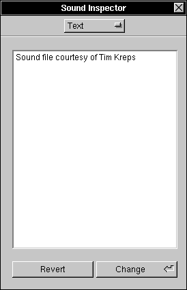

The Text Inspector
The Text Inspector displays the textual information accompanying a sound. To display the Selection Inspector, you need to bring up the Sound Inspector with the Tools Menu, and then choose Text: 

 The Revert button resets the text to the sound's currently-saved textual information.
The Revert button resets the text to the sound's currently-saved textual information.
 The Change button sets the sound's textual information to the text in the inspector. Note that this is a costly process, requiring copying the entire sound in memory, so it may take some time and use much memory for large sounds.
The Change button sets the sound's textual information to the text in the inspector. Note that this is a costly process, requiring copying the entire sound in memory, so it may take some time and use much memory for large sounds.